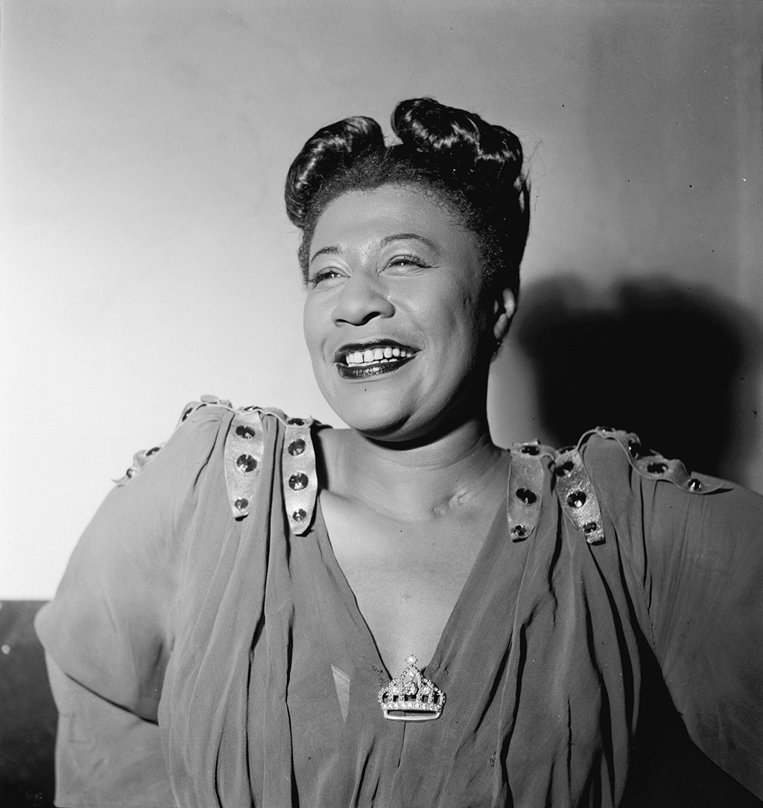

.jpg)
Louis Armstrong
(aka Luigi Braccioforte)
From the early Fifties we, devoted jazz fans in Italy, had enjoyed the visits of Satchmo who had become a beloved friend whom we would welcome at Ciampino airport - or at the Rome railway station - with the Roman New Orleans Jazz Band playing noisily “When the Saints come marching in”, to his roaring, laughing delight.
It must be known that during the war years of Fascism, when jazz music had been forbidden in Italy, still the national radio would play the "Malinconie di San Luigi" by Luigi Braccioforte.
Yes, Luigi was an essential part of our musical world; especially later in the Fifties when Jazz was now considered an elite form of music in Italy, for passionate followers. But our joyful artist was an irresistible leader and, gradually through the years, his performances, whether in large Italian theatres, exclusive jazz clubs or on the Radio Airwaves, were a constant and growing success. Invited as Guest Star at an International Pop Song Festival at San Remo he had appeared on stage, to sing in Italian: "Ciao! Stasera son qui..." with an impossible accent that had delighted the Italian public.
Our last meeting took place on the French Riviera, in the late Sixties, during a Jazz Festival at Antibes/Juan-les-Pins. We had lunched together at the beach - where he had enjoyed eyeing the ladies in their bikinis - while chatting and remembering the various occasions of our meetings, especially in Rome, through all those many years.
He had agreed to give an impromptu interview for the Italian TV on condition that I stand beside him as his ‘personal interpreter’, which was fortunate as the TV journalist spoke as limited an English as Luigi Braccioforte’s Italian. We were standing by the door of the Provencal Hotel, in Juan-les-Pins, waiting for his limo to drive him to the Nice airport and, between one question and an answer; he would wiggle his eyebrows naughtily at my beach hot-pants while asking news of his musician friends in Rome. How was Nunzio Rotondo? And Carletto Loffredo and his mother..? Had she met the Pope yet? And Romano Mussolini, always dating Sofia Loren's sister Maria? His laughter and roaring voice made the passers-by stop and smile, waving at him. He was truly a force of nature.
When the limo had arrived to drive him to the airport we had moved down the steps, had embraced primly then he had waved at the Italian TV camera and said, rolling his eyes “Ciaaao! Arrivederci Romaaaa! ”. Once seated inside the car, he had rolled down the glass window - while the Italian TV operator kept recording - and he had called out to me. “Hey, Lilian?" "Yes?" "Are you driving back to Rome?” “Yes, tomorrow.” “Listen girl, now don’t you be like them Roman drivers, now you be very careful. Hear me?” “Yes, boss!” I had saluted. “... 'cause we don’t want nothing to happen to them pink hot pants, right?! Hah! Hah!” And he had sat back, laughing, leaving me to wave as the car drove away. Ah, yes. Louis Armstrong, a joyous human being, laughing at life and accepting all aspects of his destiny, which he lived to the full. He was truly a great teacher for us all.
Ella Fitzgerald
At the annual Jazz-At-The-Philharmonic concerts in Rome, icy Norman Granz would not allow any fraternisation between his artists and the public. The same “stand off” rule applied also to the Ellington and Fitzgerald tours. But there was one occasion when Mario de Crescenzo and I managed to outsmart the Granz. Mario was a ‘jazz-person’, a special breed of jazz connoisseur as well as record collector, whose medical career was with the Nutrition Division of FAO of the UN and who befriended many well-known jazz musicians such as Stephane Grapelly and Django Rheinhard. Famous or unknown, we all enjoyed his great jazz parties at his country home on the outskirts of Rome. We met daily at work at FAO and were often involved together in the Roman jazz nightlife.
Informed that Ella Fitzgerald was to land at Ciampino airport, and be driven to the Bernini Hotel, we had also learned there would be no one to welcome her officially. We were extremely eager to meet her personally, so Mario had acquired a lovely bouquet of red roses and we had scooted off to the airport in his car.
We had obtained special permission by the police to go all the way to the gangplank to greet her as she came down the steps. Eager and admiring, Mario had offered her his bouquet with gallant words of welcome. I had waited for my turn with a huge smile. “Yes, Ella! You are so…so special…I mean, we just love you!”
She had smiled and, touched by my joy, had embraced me saying “Why, thank you…”
“AAAOUCH!” we had both exclaimed as Mario’s beautiful red roses, squeezed between us, had pierced both of us with their thorns … We had joked about the whole scene as we drove her through the Old Appian Way into Rome, with a brief tour of the City. One last embrace and we had left her in the hands of the Bernini Hotel staff.
Years later, she was singing with Ellington in Torino. I had approached her shyly, mentioning Rome, and she had instantly laughed and said in mock alarm “Ah, yes! I remember! No red roses, please!” She had not forgotten us, bless her heart.
Chick Corea
When the European Jazz Federation was created at the Warsaw Jazz Jamboree in October 1967 I had attended, representing Italy. Thereafter, we met at the annual “work meeting” in Vienna which usually concluded its session with a concert by an international artist.
Informed that our 1978 conference would host one of the new star pianists that I was promoting on my Italian radio programme, I was delighted at the idea of taping an interview, provided he was approachable. I need not have worried for Chick Corea proved to be a delightful young man. We had long conversations about the Italian scene as his father, Armando, was of Italian origin; and he agreed to tape an interview for my programme called “Jazz: Black and White” regarding the expansion and transformation of Jazz music from the United States to all Continents of the World.
I asked Chick if he considered there was a difference in the performance of the music when played by black or white American musicians; and then as opposed to musicians from other continents with different musical roots. Here is his answer:
“First of all there never really has been that difference. Now, especially in the United States, since musicians have come together to play Jazz over a number of generations, of families, there’s really no difference in the black culture and the white culture, it’s very much the same, especially when it comes to do with Jazz music. So the culture now is without any delineation of colour at all.”
“But are you familiar with European Jazz musicians? And would you say there is a difference between European Jazz and American Jazz?”
“Yes, there is a difference because the Europeans cultivate a certain kind of playing because they live together and they work together; and the Americans cultivate their certain kind of playing, so there are differences but the actual language of Jazz is very much universal now, so more and more, as younger players develop their talents, it’s very difficult to tell who’s a European Jazz musician? Who’s an American Jazz musician? Who’s a Japanese Jazz musician?” He smiled, amused.
“OK. Thank you. Now Chick, you started as what we could call a “strictly Jazz” musician, didn’t you?”
“My early years with music were definitely with Jazz, my father is a Jazz musician and I grew up very young with the music of Charlie Parker and Dizzy Gillespie and Bud Powell. Later on, after maybe five or six years of studying the piano, I began to practice classical piano music as well and I spent some years studying. As a matter of fact I studied for about six years with… I don’t know how well known he is now but he spent most of the early part of his life at the Milan Conservatory, his name is Salvatore Sullo. I studied with him in Boston for six years and he showed me a very standard basic classical piano technique, Italian Style!” (We are both amused)
“Yes, your parents are of Italian origin…”
“Yes, my mother’s parents are from Sicily and my father’s parents are from Calabria.”
“What would you say were the turning points in your career from the moment you started playing in public. Would you say that playing with Miles Davis sort of opened a new door for you?”
“There were probably two major things that happened. One, there was a period of a few years where I began to work with very established, very unique and creative people. Stan Getz was one and Sarah Vaughan was another; and Miles Davis, finally, was the other. This gave me experience in playing with an artist who had developed very much certainty with his art form, and I enjoyed that. I think the next turning point in my life was actually a non musical event. It was the discovery of the philosophy of L. Ron Hubbard who is a great American philosopher.”
“Ah, yes. Can you tell us something about it?”
“Yes, L. Ron Hubbard has researched many different kinds of things about life and people. He writes very eloquently and very clearly about the nature of living, in very practical terms. He’s a very practical philosopher and one of the main emphasises that I learned from him, and still continue to learn, is his emphasis on the importance of communication and also the description and defining of communication. This made me very much aware of something I wasn’t aware of before this, which was my relationship as an artist to people that I play to. Because it was very much a standard in the Jazz Community, before I discovered new awareness about communication, it was very much a standard to only play for your self.”
“And turn your back to the public…” (He smiles, as we think of Miles)
“A little bit like that, yeah and for me… this wasn’t rewarding for me, because I very much like the feeling of being with people and I think art forms reach their best place when many people are included in the experience. So this was a change for me and at that point I put together the group “Return to Forever” and began to experience communicating my music to people.”
“But Return to Forever was a small group; the group with which you play tonight is made of how many people?”
“Thirteen altogether” “How come? How did you grow out of…” “Well, more and more, through the years, I began to be interested in composing so I wrote music for these records “The Leprechaun”, “My Spanish Heart” and the newest one “The Mad Hatter”. All with this instrumentation with a string quartet and brass, and it gives me a chance to express myself not only as a pianist but also as a composer and orchestrator. Also I’m very much a group kind of person, I like to play with people and I’m having fun now with this new group.” “Yes, it certainly sounded like it. Tell me, would you say that classic music is having gradually a stronger influence on you? Or shall we say a presence which is felt more and more… At least it seems to me, listening to your records, that you are becoming more and more aware of…how can I say, of harmony and… Foolishly one might say you are becoming more romantic. I don’t know how to explain it but I think you understand what I mean. This is something that I am feeling in your music; we might say that it’s less Jazz, if we want to accept the word Jazz as a label, and it’s more “just music”.” “I myself, more and more, I like to take away the categories of music for myself because no matter what kind of music, the essence of any good music is the feeling that gets communicated from the creator to the people who listen. So I don’t think about my music so much in terms of the category of Jazz and I am very much aware of, and influenced, by classical music. And I love classical music and now that I am developing my abilities as a composer I am not putting aside the rich history that classical music has given the planet.” “So what are your future plans?” “My main one is to develop the creation of this group, which I very much like.” “Is it going to be bigger?” “Not bigger, no, (He grins) it’s going to remain the same size but now… this is our first tour, our initial coming together, and creatively the potential that’s within the group, because of the people that are there, is very great and I’ve only just begun to explore it. That’s one thing I’m going to do in the coming months. And also there are various other projects that I have. Sometime next year, I don’t know exactly when, I’m going to compose the music for a major movie in the United States, which I’m sure will be shown in Italy at some time.” “Who is the director?” “I can’t say right now.” “OK. Now how about Italy? When will you be coming to Italy?” “Well, I don’t have any plans right now but I’d very much like to come to Italy to play. I’m going to investigate the right kind of setting and time and the best scene to come and play.” “Then I hope we can say very soon ‘Arrivederci’?” “OK. Thank you very much.” He asked for my Rome address and sent me some publications regarding Scientology hoping I would find it of interest, for which I thanked him and put them carefully away with the Rosicrucian magazines sent to me by Sonny Rollins, as well as the publications on the history of the Baha’i’, offered me by Dizzy Gillespie. The years that followed seemed to strengthen our friendship, especially when my son, Francesco, moved to Los Angeles to study at USC and was welcomed by the Corea household at Los Feliz, where Chick, a brotherly mentor, would share his musical knowledge with my piano student. I would receive detailed reports when Chick had invited Francesco to a Sushi restaurant or about some party in Chick’s home where he had met some of the leading Jazz artists in town. I recall his enthusiastic description of this very odd instrument that Chick's friend Emmett Chapman had invented and called "The Stick". Cherry on the cake, one day Francesco had described how he had spent one afternoon in Los Feliz playing with Chick, on two grand pianos. I believe the tune examined was “All Blues”. Apart from the welcome into the Corea household - which lasted through all the years, even after they moved to Florida - Francesco was also adopted by Chick's magic 'sound technician' Bernie Kirsch of the Chick Corea Productions, who assisted him in all his serious musical endeavours through the years that followed. For my part, to thank Chick for his friendship, I would invite him to perform at some concerts in Italy, whenever he was on his European tours. He would usually add "one day off" for us just to visit together, when he would discover special aspects of Italy. During the 16 years that I managed the jazz music school I had founded with Dizzy Gillespie in Bassano del Grappa, Chick was among the supporting artists visiting the school. One day he introduced me to his friend Gary Burton and soon enough I could organize a concert for Burton's band that was touring Europe and made up mostly by his Berklee students. I recall being particularly impressed by his very young pianist, Makoto Ozone, with whom I established a "mother-son" relationship and who years later cooked for me an incredible Japanese dinner at his apartment in Boston... When Gary accepted to hold a lengthy seminar on "the art of Improvisation" our school was invaded, during those days, by students from far off places like Sicily, Austria and Yugoslavia. Gary was a natural teacher and incredibly good at explaining the secrets of his improvisation. His speech was so logical, and I recall his telling the students that "when you start your improvisation, you must take your listener by the hand and never let him go. Never loose contact while you are telling your story, for you are there for the listener, not to play on yourself." He spent every hour of the day and evening surrounded by an extremely attentive classroom of ages ranging from 16 to 50, talking, discussing, explaining and obviously enjoying each other's company. Yes, Gary Burton was a very special gift from Chick to our music studies. In the mid-80’s I had obtained for Chick to perform in the city of Sorrento where I produced their annual Jazz season. The concert was an obvious success and the next day the Mayor of Sorrento, a Jazz enthusiast, had given Chick the grand tour of the city and its famous coastline attractions. On the right Chick could admire the islands of Capri and Ischia. On the left, nestled the renowned villages of Positano, Ravello and Amalfi. Chick had expressed his admiration then added, sighing, that his wife Gayle would certainly love to visit the place. The Mayor of Sorrento, on an impulse of southern hospitality, had immediately invited Chick and Gayle to visit Sorrento as his personal guests. And to prove his intention, the Mayor had driven us to a tiny house and confirmed his offer. It was a one-bedroom love nest and he was happy to give Chick and Gayle the use of it for as long as they wished. In exchange of a one-day Jazz meeting with the students of the local music school perhaps? Why not? Very touched by this generous offer, Chick had promised to let me know Gayle’s reaction as soon as possible. A year later I was again with Chick, whom I had invited, this time, to northern Italy where I was taking him to lunch in the historical war zone of World War One, in the famous Monte Grappa Mountains. Enjoying the menu and the view, Chick had informed me that he finally had news regarding the Sorrento project. He and Gayle were very happy to accept the hospitality of the Mayor of Sorrento and he was telling everybody just what a wonderful holiday they were going to enjoy. I was happy to hear that. Then he had added that, by the way, also his two grown up children had decided to join the Sorrento party with him. As well as his father and mother, and possibly also Gayle’s parents would be of the party. So did I think the Mayor of Sorrento would mind if there were 8 guests to accommodate, instead of 2? That, we shall never know. By that time quite a few political events had taken place in Sorrento and the Mayor and his Administration, under investigation, were no longer in office. The newly appointed Mayor was totally indifferent to Jazz; therefore that was the end of our project. However, I was happy to follow Chick’s rise to a well-deserved stardom as he moved between a solo performance, to a Trio and on to other formations experimenting in various directions. He remained in touch with my family, through the years. When I retired to Nice, France, I forwarded my new address, inviting him to look me up, as his summer tour of European Jazz Festivals would no doubt bring him also to the Jazz Festivals on the Côte d’Azur. He had answered immediately by email: “Hi Lilian. Nice to hear from you. You sound well! Sorry I missed seeing Francesco in L.A. but I received a nice note from him. Thank you for your nice invitation. Let’s play it by ear – I will have been on tour 2 months of hard travel and probably the bed in the hotel room will be the most attractive but – you never can tell. Your website is very nice. All the heroes you met and worked with, very nice. I send my best regards and hope to see you – one time or another. Love, Chick.” The date was 4th of July 2008. We did not have the chance to get together again, although he met regularly with Francesco, through whom he congratulated me when my book was published by the U. of Illinois Press. The last contact was a photograph of three grinning friends: Chick, Francesco and Julia, his wife, re-united in Seattle in 2018. However, one of my favourite memories is the time Francesco and I were invited to join Chick, who was giving a special concert with his exceptional Trio with Miroslav Vitous and Roy Haines in the historic ancient ruins of Pompeii. The whole occasion was memorable, starting with the five of us sitting down to enjoy a special Neapolitan dinner, sharing anecdotes, special pasta treats with good wine, and relaxed laughter. That night, with a full moon lighting the haunting beauty of that ancient Roman amphitheatre, we listened to the most perfect performance that the magic Chick Corea Trio would ever give. And the song I favoured was called “Friends.” Today, as I write this, I recall when my son informed me of Chick's sudden passing away on 9th February 2021, aged 79. I still refuse to believe it, not Chick, he will always be there, somewhere, sharing his music with us with his boyish good-humour and ever-ready smile.Goodnight, sweet Armando, and thank you.